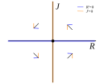

Section4.6Equilibrium Analysis, Models of Love, and Linearization
Equilibrium solutions are one of the most important concepts in understanding dynamical systems. We already know that we find equilibrium solutions by looking for the intersection of the nullclines. In the previous section, we saw that sometimes we can determine the stability of an equilibrium by looking at the direction of the vector field in all of the regions surrounding an equilibrium. Unfortunately, this is sometimes inconclusive. Even worse, it might be hard to visualize especially if there are more than two state variables.
We need a more definitive way to determine whether an equilibrium solution is stable or unstable. For our projection models involving sequences, we learned about the possibility of using the eigenvalues of the derivative matrix of the projection functions. We will be able to do the same thing for systems of differential equations. This time, however, we are looking at whether the eigenvalues of the matrix have positive or negative real part.
Subsection4.6.1Linear Differential Equations and Romeo and Juliet
Suppose we have \(n\) different state variables, \(X_1,\ldots,X_n\) and a system of \(n\) differential equations for those variables,
We say that the system is a linear system of differential equations if the \(n\) rate functions are all just linear combinations of the state variables
The coefficients define a square matrix with \(n\) rows (for each equation) and \(n\) columns (for the state variables),
\begin{align*}
\end{align*}
This system is often summarized as a vector differential equation
\begin{gather*}
\end{gather*}
where \(X = (X_1, X_2, \ldots, X_n)\) is the state vector containing all of state variables in order.
As our motivating example, we will consider a simple model for love developed by mathematician Steven Strogatz as a way to illustrate linear differential equations, which he called the “Romeo-Juliet” model of love. Let \(R\) quantify Romeo’s ardor toward Juliet, so that \(R \gt 0\) corresponds to Romeo feeling in love with Juliet and \(R \lt 0\) corresponds to Romeo feeling out of love with Juliet. We let \(J\) quantify Juliet’s ardor toward Romeo in a similar way.
In his play “Romeo and Juliet”, Shakespeare gives a dialogue between Romeo and his friend Benvolio:
Benvolio
What sadness lengthens Romeo’s hours?
Romeo
Not having that, which, having, makes them short.
Benvolio
In love?
Romeo
Out.
Benvolio
Of love?
Romeo
Out of her favour, where I am in love.
In a very simplified interpretation of the relationship, Romeo initially has positive feelings of love toward Juliet but because he perceives that he is out of her favor, he is sad. From a modeling point of view, we will say that seeing Juliet’s feelings be negative causes Romeo’s feelings of love decrease.
Juliet, on the other hand, expresses coyness at Romeo in a different scene:
Juliet
If thou dost love, pronounce it faithfully: Or if thou think’st I am too quickly won, I’ll frown and be perverse an say thee nay, So thou wilt woo; but else, not for the world.
Again, we will take a simplified interpretation and say that Juliet’s actual feelings move in the opposite direction of Romeo current feelings. If Romeo loves Juliet, Juliet’s feelings for Romeo will decrease. If Romeo dislikes Juliet, Juliet tries to win him back by having her feelings increase.
The simplest model capturing these simplified (and nontextual) dynamics would be given by a system of differential equations
\begin{align*}
R' \amp = a J, \\
J' \amp = - b R.
\end{align*}
This says that Romeo’s feelings move in the direction of Juliets feelings by having a rate of change that is proportional to Juliet’s current level of love. Meanwhile, Juliet’s feelings have a rate of change that is proportional to the opposite of Romeo’s current level of love.
The phase plane will be the \((R,J)\) plane. The \(R\) nullcline is the line \(J=0\) (horizontal axis). If \(J \gt 0\text{,}\)\(R\) is moving to the right; if \(J \lt 0\text{,}\)\(R\) is moving to the left. The \(J\) nullcine is the line \(R=0\) (vertical axis). If \(R \gt 0\text{,}\)\(J\) is moving down; if \(R \lt 0\text{,}\)\(J\) is moving up. There is only one equilibrium at \((R,J)=(0,0)\text{,}\) a state of mutual apathy.

Figure4.6.1.Phase plane for the Romeo-Juliet model showing nullclines, equilibrium, and directions of motion.
The preliminary phase plane analysis based on the nullclines suggest that the dynamics will have the state spiraling around the equilibrium. We can verify this numerically by calculating a solution and looking at the plot. Of course, we need to select parameter values, so we will choose \(a = 0.8\) and \(b = 0.2\text{.}\) There is no fixed sense of scale for this problem, so we will start with an initial value \(R(0) = 1\) and \(J(0) = 0\text{,}\) so that Romeo likes Juliet but Juliet starts out being indifferent.
The following listing will create a graph showing the phase plane with nullclines and the trajectory for this initial value problem as well as a graph showing the solutions as functions of time.
for some angular frequency \(\omega\text{.}\) The love of Romeo and Juliet, if not interrupted, would be a never-ending cycle of ups and downs. But what is the angular frequency?
Since our demo had \(a = 0.8\) and \(b = 0.2\text{,}\) we get \(\omega = \sqrt{(0.8)(0.2)} = 0.4\text{.}\)
Now I want to make a connection to matrices and eigenvalues. Our system of differential equations
\begin{align*}
R' \amp = a J, \\
J' \amp = - b R.
\end{align*}
is a linear system because the rate formulas are linear combinations of the state variables \(R\) and \(J\text{.}\) The matrix associated with this system contains the coefficients of the variables,
The eigenvalues are complex numbers, \(\lambda_1 = 0 + 0.4i\) and \(\lambda_2 = 0 - 0.4i\text{.}\) The imaginary coefficient, the number multiplying \(i\text{,}\) is exactly the same as our angular frequency.
Subsection4.6.2Linear Systems of Differential Equations and Eigenvalues
The observation that the eigenvalues of the matrix were related to the solutions of the system of differential equations is not an accident. It is not our goal to learn the theory, but I will summarize the major results.
Theorem4.6.5.
Suppose a linear system of \(n\) differential equations for \(n\) state variables is written in matrix form \(\vec{X}' = A \cdot \vec{X}\) with a square \(n \times n\) matrix \(A\text{.}\) With some rare exceptions, the matrix \(A\) will have \(n\) eigenvalues \(\lambda_1, \lambda_2, \ldots, \lambda_n\) and \(n\) corresponding eigenvectors \(\vec v_1, \vec v_2, \ldots, \vec v_n\text{.}\)
Each eigenvalue–eigenvector pair \((\lambda_k, \vec v_k)\) provides one component of a solution.
If \(\lambda_k\) is a real number, then there is a solution \(e^{\lambda_k t} \vec v_k\) corresponding to either exponential growth or decay in the direction of \(\vec v_k\)
If \(\lambda_k\) is a pure imaginary number, \(\lambda_k = \omega i\text{,}\) then its corresponding eigenvector will have a nonzero real and imaginary vector components and there will be two component solutions of the form \(\cos(\omega t) \vec{u}\) and \(\sin(\omega t) \vec{v}\) where \(\vec u,\vec v\) are in the plane of the real and imaginary components of the eigenvector.
The conjugate value \(-\omega i\) will also be an eigenvalue and its corresponding eigenvectors will similarly be conjugates. The conjugate does not introduce any new solutions.
If \(\lambda_k\) is a complex number with real and imaginary parts, \(\lambda_k = \alpha + \omega i\text{,}\) then its corresponding eigenvector will also have a nonzero real and imaginary vector components. There will be two component solutions of the form \(e^{\alpha t} \cos(\omega t) \vec{u}\) and \(e^{\alpha t} \sin(\omega t) \vec{v}\) where \(\vec u,\vec v\) are in the plane of the real and imaginary components of the eigenvector.
Growth or decay ultimately comes down to the real part of the eigenvalues. For each eigenvalue with a positive real part, there is a eigenvector-based direction for which solutions see exponential growth. For each eigenvalue with a negative real part, there is a eigenvector-based direction for which solutions see exponential decay. Eigenvalues that are complex conjugate pairs together correspond to two directions in which there is oscillation, and whether the oscillation grows or decays is based on the real part of the eigenvalue.
The take-home message for this theorem is that when we have our matrix for the linear system of differential equations, we look at all of the eigenvalues and keep track of whether the real part is positive or negative. This will give us an understanding of whether solutions are growing or decaying. The imaginary parts will give us an understanding of whether there are any oscillations.
Example4.6.6.
A variant of the Romeo and Juliet model is to consider the possibility that both Romeo and Juliet respond positively to the others’ current emotions. That is, if Romeo loves Juliet, Juliets feelings toward Romeo increase, regardless of their current value. If Romeo dislikes Juliet, then her feelings will decrease. The mutually responsive model of love is given by
\begin{align*}
R' \amp = a J,\\
J' \amp = b R.
\end{align*}
The matrix associated with this system is
\begin{equation*}
A = \begin{bmatrix} 0 \amp a \\ b \amp 0 \end{bmatrix}\text{.}
\end{equation*}
Using particular values \(a = 0.8\) and \(b = 0.2\text{,}\) we find two real eigenvalues \(\lambda_1 = 0.4\) and \(\lambda_2 = -0.4\text{.}\) R reports the first eigenvector as \(\vec v_1 = \langle 0.8944, 0.4472 \rangle\text{,}\) which will be the direction of the exponential growth component \(e^{0.4 t}\text{.}\) The second eigenvector \(\vec v_2 = \langle -0.8944, 0.4472 \rangle\) gives the direction of the exponential decay component \(e^{-0.4 t}\text{.}\)
The equilibrium of no passion in this case is unstable because solutions have components that move away from the equilibrium with exponential growth.
Subsection4.6.3Linearization Around Equilibria
We are now ready to give the result for local stability analysis of equilibria in systems of differential equations. Suppose we have a system of differential equations—linear or nonlinear—
And suppose we have found an equilibrium solution \(\vec X^* = (x_1^*, x_2^*, \ldots, x_n^*)\) at which all of the rate functions equal zero. Then near the equilibrium, the displacement of our solution from the equilibrium will approximately follow the linearized system of differential equations formed by the partial derivatives.
and we evaluate the matrix at the equilibrium to get a specific matrix \(Df(\vec X^*)\text{.}\) Compute the eigenvalues of this matrix.
If all of the eigenvalues have negative real parts, then the equilibrium is locally stable.
If one or more of the eigenvalues have positive real parts, then the equilibrium is locally unstable.
If one or more of the eigenvalues has a real part that is 0 and none have positive real part, then this test is inconclusive.
The following Sage script can be modified to define the state variables and rate functions for your model and it will attempt to find algebraic solutions for equilibria. For each equilibrium solution it finds, it will report back the eigenvalues so that you can interpret the results. This is essentially the same analysis as what we did earlier for projection functions.
The provided example is for the nondimensionalized producer–consumer model,
\begin{align*}
\dot{a} \amp = a \cdot \left(1 - a\right) - a z,\\
\dot{z} \amp = (- \alpha + \beta a) \cdot z,
\end{align*}
which has two free parameters \(\alpha\) and \(\beta\text{.}\) The code initial analyzes the system for \(\alpha = 0.2\) and \(\beta = 0.1\text{.}\)
The matrix of partial derivatives in terms of the parameters and state variables will be
\begin{equation*}
Df = \begin{bmatrix}
1 - 2a - z \amp -a \\
\beta z \amp -\alpha + \beta a
\end{bmatrix}\text{.}
\end{equation*}
Using the parameters \(\alpha = 0.2\) and \(\beta = 0.1\text{,}\) we find the following results:
Both eigenvalues are real, and one of them is positive. So this equilibrium (which is not biologically meaningful since one population is negative) is unstable
With these parameter values, the system is only at a stable equilibrium when the algae is at its natural carrying capacity and there are no zooplankton.
Changing the parameters to \(\alpha = 0.2\) and \(\beta = 0.3\text{,}\) we repeat the analysis:
Both eigenvalues are real and negative. This equilibrium is stable
With these new parameter values, the system is stable when there are both algae and zooplankton present at equilibrium. If the population started with only algae at equilibrium \((1,0)\text{,}\) then introducing just a few zooplankton will result in the zooplankton growing to reach a positive equilibrium value.